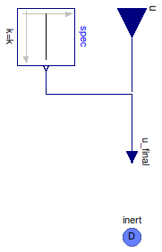

Table of Contents
- User's Guide
- BCs
- Sensors
- Assemblies
- Regions
- Subregions
- Connectors
- Characteristics
- Units
- Quantities
- BaseClasses
Download
- Latest: FCSys-2.0.zip (**Please check back soon or contact kdavies4 at gmail.com.)

| Name | Description |
|---|---|
| Partial model for a mechanical BC | |
| BCType | Types of BCs |
type BCType = enumeration(
Velocity "Velocity",
Force "Force") "Types of BCs";
 FCSys.BCs.InertDalton.Mechanical.BaseClasses.PartialBC
FCSys.BCs.InertDalton.Mechanical.BaseClasses.PartialBC
| Type | Name | Default | Description |
|---|---|---|---|
| Boolean | internal | true | Use internal specification |
| Constant | spec | redeclare Modelica.Blocks.So... | Internal specification |
| Axis | axis | Axis.x | Axis |
| BCType | bCType | Type of BC | |
| Axes with linear momentum included | |||
| Boolean | inclLinX | true | X |
| Boolean | inclLinY | false | Y |
| Boolean | inclLinZ | false | Z |
| Type | Name | Description |
|---|---|---|
| input RealInput | u | Value of BC |
| InertDalton | inert | Connector for linear momentum and heat, with additivity of pressure |
partial model PartialBC "Partial model for a mechanical BC" extends FCSys.BCs.InertDalton.BaseClasses.PartialBC; parameter Axis axis=Axis.x "Axis"; constant BCType bCType "Type of BC"; // Note: This is included so that the type of BC is recorded with the // results. protected final parameter Integer cartAxes[n_lin]=index({inclLinX,inclLinY,inclLinZ}) "Cartesian-axis indices of the axes of linear momentum"; final parameter Integer linAxes[Axis]=enumerate({inclLinX,inclLinY,inclLinZ}) "Linear momentum component indices of the Cartesian axes"; equation inert.p = 0 "No pressure"; for i in 1:n_lin loop if cartAxes[i] <> axis then inert.mPhidot[i] = 0 "No force along the other axes"; end if; end for; inert.Qdot = 0 "Adiabatic";end PartialBC;